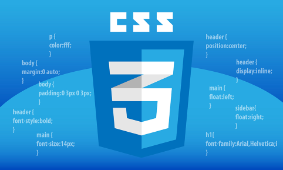
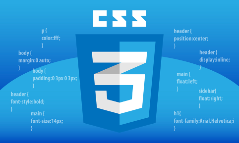
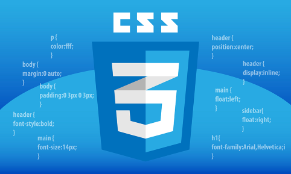
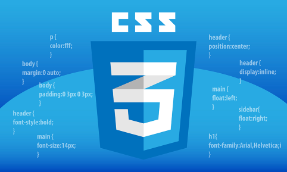

Overtime, the JsGames staff has learned tons about HTML (Hypertext Markup Language), although it all started from notepad. back in the day, we didn't have fancy code applications, but just the normal notepad. As time as passed, we have picked up many new skills, expanding a lot more on our basic HTML code.
CSS was used shortly after learning the basics of HTML. It makes everything you see on a webpage look much more refined, in palce, and better in terms of style. This is why its named Cascading Style Sheets. Similar to HTML, CSS has been used for a long time now, with our current code being much more advanced than what we learned years ago.
Last but definitely not least, we have JavaScript. JavaScript is one of the more complicated languages to learn. Back in the day, JavaScript would be used for site interactivity and enhancement, although, nowadays it can also be used to code games. The functionality of the games coded by our staff is mostly based off of javascript, thus giving the name, JsGames